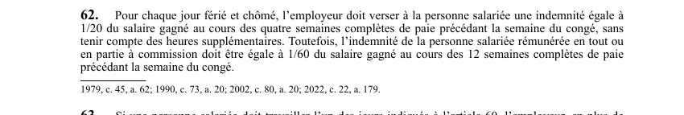

art-62-LNT : indemnité de jour férié et chômé
Un article du wiki ⚖️ Recueil législatif
En bref
Article qui donne la formule de calcul de l'indemnité que l'employeur doit verser pour chaque jour férié et chômé. Cette norme pécuniaire vise l'employeur. Elle ne porte ni sur le repos hebdomadaire ni sur le congé de mariage.
- Règle générale : 1/20 du salaire gagné au cours des quatre semaines complètes de paie précédant la semaine du congé.
- Les heures supplémentaires sont exclues de ce calcul.
- Personne salariée rémunérée en tout ou en partie a commission : 1/60 du salaire gagné au cours des 12 semaines complètes de paie précédant la semaine du congé.
- Cette même formule sert a rémunérer les deux premières journées d'absence pour obligations familiales (art. 79.7).
🌐 LegisQuébec · 📄 PDF officiel (page 23)
Texte officiel : capture du PDF
{kind=link}

Toucher l'image pour l'agrandir🔗 Ouvrir a cette page : LNT.pdf : page 23 · texte a jour au 26 mars 2024
Voir aussi
- art-78-LNT : repos hebdomadaire de 32 heures · repos hebdomadaire d'une durée minimale de 32 heures consécutives.
- art-79.7-LNT : congés pour obligations familiales · 10 journées d'absence par année pour obligations familiales ou parentales, dont les deux premières rémunérées selon la formule de l'art. 62.
- art-81-LNT : congé de mariage ou d'union civile · journée d'absence rémunérée le jour du mariage ou de l'union civile de la personne salariée.
- ↑ Loi : LNT
Pages qui pointent ici (7)
- art-52-LNT : semaine normale de travail Recueil législatif
- art-78-LNT : repos hebdomadaire de 32 heures Recueil législatif
- art-79.7-LNT : congés pour obligations familiales Recueil législatif
- LNT Recueil législatif
- LNT : Chapitre III : Jours fériés et repos Recueil législatif
- Loi sur les normes du travail (LNT) Droit du travail
- Tes heures, tes vacances et tes congés quand tu travailles en rotation Droit du travail